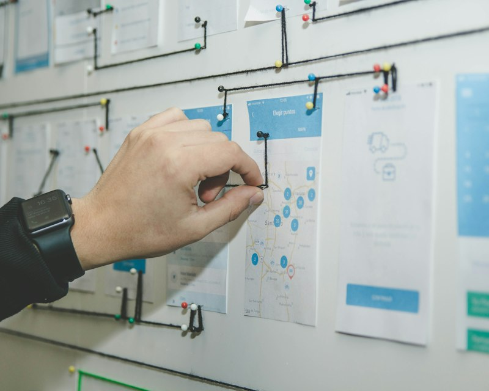

Turn data into disclosure, intelligence and revenue
ecolve.ai builds AI-native platforms for ESG reporting, financial analytics and satellite connectivity monetisation, and engineers private AI for enterprises that cannot afford to compromise on data control. Operating from Australia and Sri Lanka.
Six ways we put AI to work
From sustainability disclosure to Starlink monetisation, ecolve.ai delivers production-grade AI where it moves the numbers.

AI-Powered ESG Suite
Automate the full ESG lifecycle, from data collection and emissions accounting to board-ready disclosure.

CLARA, AI Financial Analytics
An autonomous AI analyst that reads your financials, explains the variances and writes the board pack.

Meridien, Starlink Enterprise Monetisation
Turn Starlink connectivity into a managed, billable, revenue-generating service.

Private LLM Deployment
Secure, enterprise-owned language models running inside your own environment.
AI Solutions Engineering
Bespoke AI systems, agents and data products, built end to end by our engineers.

Climate Tech with AI
AI that measures, models and reduces environmental impact.
Boosting business with applied AI
ecolve.ai specialises in AI that solves hard, regulated, data-heavy enterprise problems. We combine our own products with deep engineering to deliver measurable gains in compliance, finance and operations.
Products
Ready-to-deploy platforms for ESG, financial analytics and connectivity monetisation.
Engineering
Private LLMs, AI agents and custom solutions built around your data and workflows.

Transforming enterprises with powerful, responsible AI
At ecolve.ai, we build AI-native software for organisations facing real pressure: mandatory sustainability disclosure, tighter finance cycles, and the need to adopt AI without surrendering control of their data. Our team brings more than 3 years of experience in national-scale digital infrastructure and enterprise delivery.
- Replace spreadsheets and manual reporting with auditable, AI-assisted workflows.
- Run language models privately, inside your own cloud or on-premise environment.
- Turn connectivity and climate data into decisions and new revenue.
Innovating AI implementation
From first proof of concept to production at scale, ecolve.ai ships AI that is secure, explainable and built for enterprise operations.
Products
Faster reporting, fewer errors and audit-ready outputs.
Engineering
AI systems designed around your data, your security rules and your teams.
Powerful AI solutions for enterprise success
Products and engineering services that automate compliance, sharpen financial insight and unlock new revenue.
AI Products that Replace Manual Work
ESG, finance and connectivity platforms that automate reporting, analysis and billing.
Private AI You Fully Control
Private LLM deployments keep sensitive data inside your boundary, with no public model exposure.
Engineering for AI at Scale
Our AI Solutions Engineering team designs and delivers custom agents, RAG pipelines and data platforms.
ecolve.ai: empowering enterprises with AI
A snapshot of our footprint and expertise.
Discover the latest insights
Practical thinking on ESG, AI and enterprise technology.

We build AI-native software platforms for ESG reporting, financial analytics and Starlink enterprise monetisation, and we engineer private LLMs and bespoke AI solutions for enterprises.
Yes. Our private LLM deployments run in your cloud tenancy or on-premise infrastructure, so your data is never sent to public model providers.
GRI, TCFD, SASB and ISSB (IFRS S1 and S2), with AI-assisted mapping between them.
Typically 2–4 weeks depending on scope. We begin with a short discovery and pilot phase.
We offer flexible pricing plans tailored to your scope. Please get in touch and we will put together a proposal.
Yes. We serve clients across APAC, the Middle East and global markets, with team coverage across AEST and IST time zones.